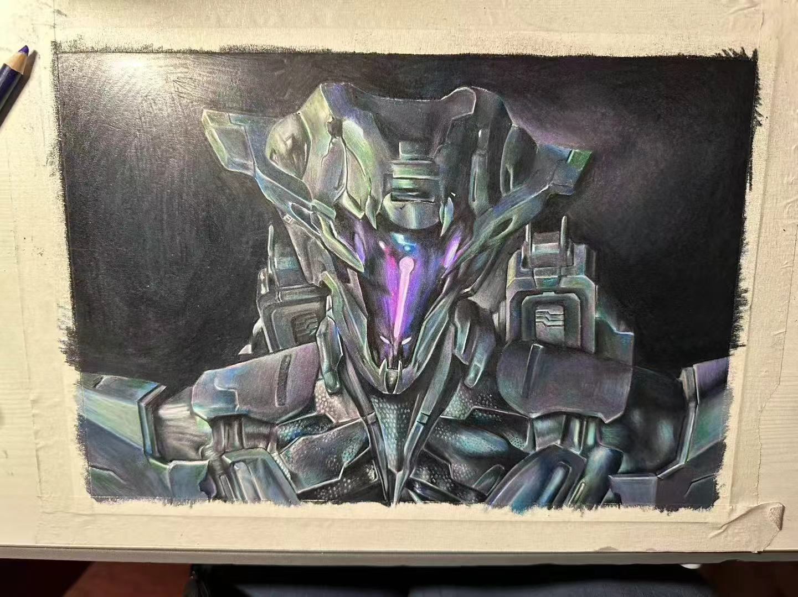
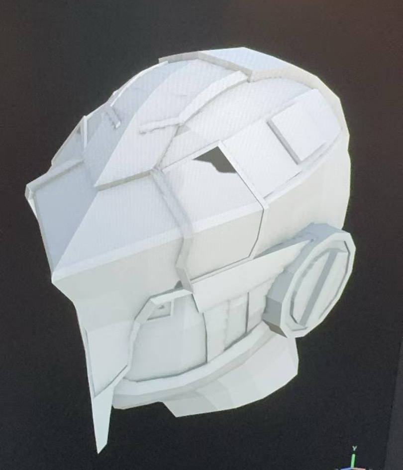
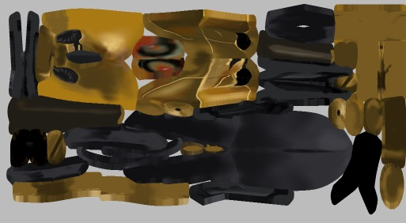
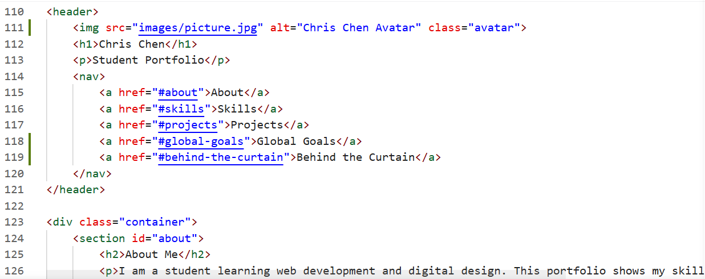
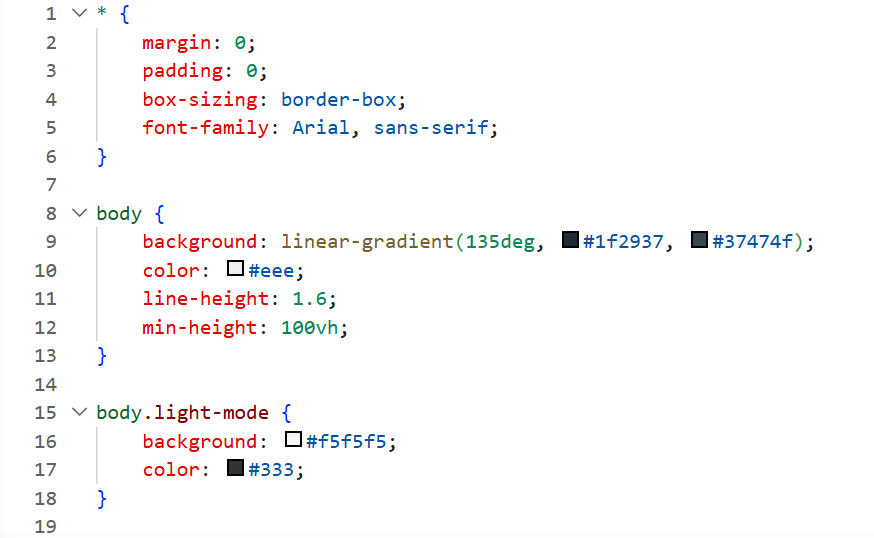
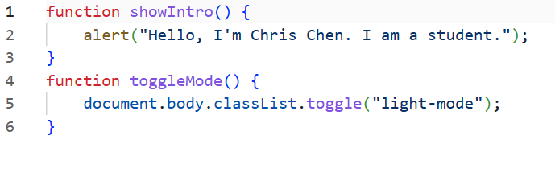

Student Portfolio
I am a student learning web development and digital design. This portfolio shows my skills and class projects.



- Ocean Community Website
- 3D Models with UV and Textures
- Basic Interactive Web Pages
- Colored Pencil Artwork
Goal 9: Industry, Innovation and Infrastructure
I am interested in this goal because my work in 3D modeling, game design, and web development is all about using technology to build new creative tools and experiences. Learning these skills helps me understand how digital innovation works, and how it can be used to create better, more accessible infrastructure for creative communities.
This website was built using HTML, external CSS, and external JavaScript. I used VS Code as my editor and Live Server to preview changes in real time.
HTML Structure:

CSS Styling:

JavaScript Interactivity:

Challenging parts:
Developer tools: I used browser developer tools (Inspect Element) to test different CSS styles, check for errors in the console, and debug image loading issues.
What I learned: I learned how to structure a complete website project, use external style and script files for organization, and solve problems by testing and debugging. I also learned how to add simple interactivity with JavaScript.
This website uses clear structure, readable fonts, and simple navigation.